The objective of this practice is to be able to create a local repository per to be able to use it dins of the company on these trebalant. the boss you you need the following:
$ sudo apt-get update
$ sudo apt-get install git
$ git --version
If everything has gone well, the following response should be displayed depending on the version that has been installed, in this case we have version 2.25.1 (25/03/2022):
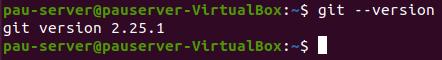
$ git config --global user.name "Pau Motos"
$ git config --global user.email pmotos@insdanielblanxart.cat
$ git config --list
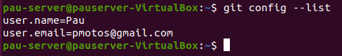
$ sudo useradd -r -m -U -d /home/git -s /bin/bash git
$ sudo su - git
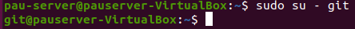
$ mkdir -p ~/.ssh && chmod 0700 ~/.ssh
$ touch ~/.ssh/authorized_keys && chmod 0600 ~/.ssh/authorized_keys
$ git init --bare ~/motos_project.git
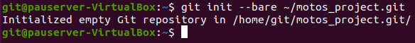
$ cat ~/.ssh/id_rsa.pub
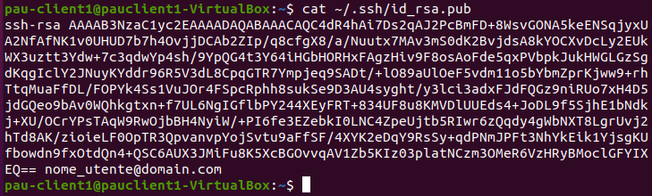
$ ssh-keygen -t rsa -b 4096 -C "nome_utente@domain.com"
$ nano /home/git/.ssh/authorized_keys
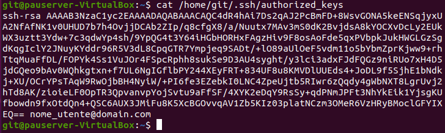
$ cd /home/git/motos_repository/proyecto1.git/
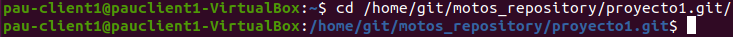
$ git init .
$ git remote add origin git@10.0.2.4:motos_project.git
*Don't forget to replace git_server_ipwith the hostname or IP address of the Git server.*
$ touch test_file
$ git add .
$ git commit -m "descriptive message"
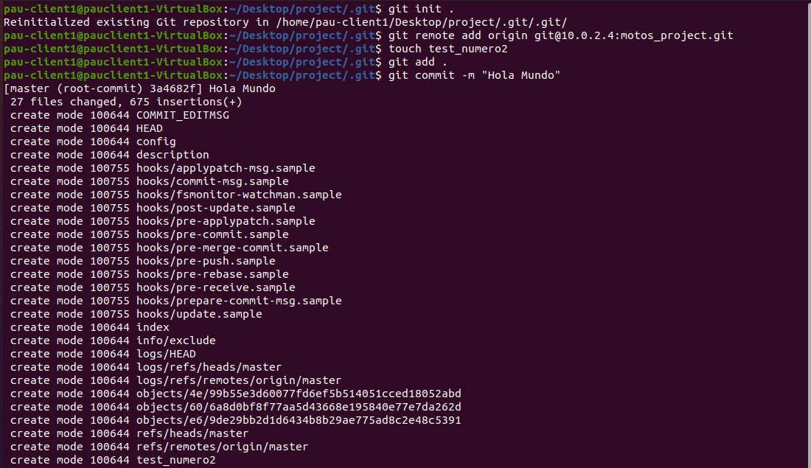
$ git push -u origin master
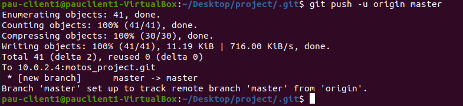
$ git git rm delete_this.txt
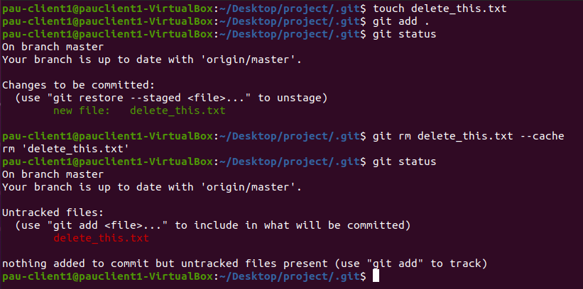
The idea is to create a new branch to be able to fix problems and then return the fixed file to its original branch.
$ git checkout new_branch
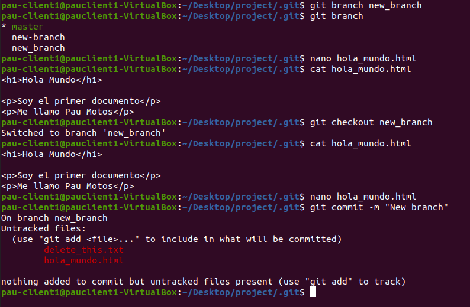
Html document: https://github.com/paumotos/dec-pmotos
$ git remote add index https://github.com/paumotos/dec-pmotos
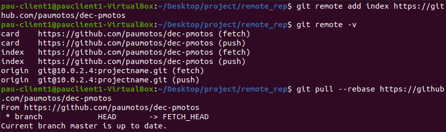
$ git clone https://github.com/paumotos/dec-pmotos
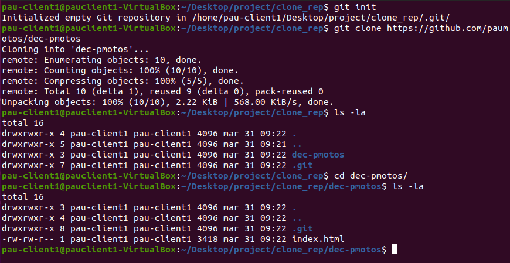
$ git tag -a v1.1 -m "Segona versió"
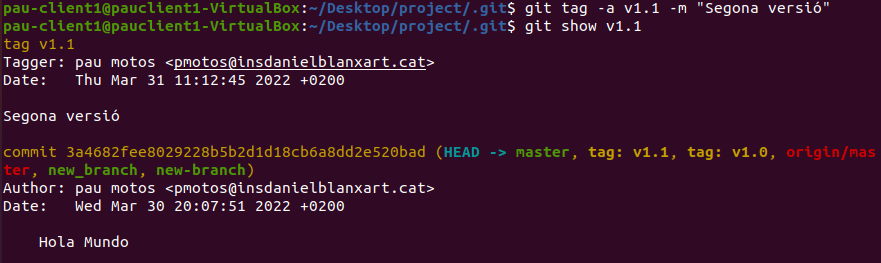
$ git reset --hard
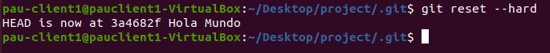